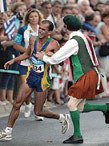
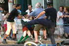

Neil Cornelius Horan was born in County Kerry, Ireland in 1947. He was ordained as a priest in 1973 and worked as one in London, England. He first came to public attention in 2003 at the British Grand Prix in Silverstone racetrack. On this occasion, he ran onto the track. As Formula One cars swerved past him at 200 km/h he performed an Irish jig while holding a banner saying, “Read the Bible.  The Bible is always right.” A marshal wrestled Horan to the ground and the police arrested him. He spent two months in jail for this. A year later, police at the Epsom Derby (a major horseracing event) caught Father Horan at the side of the racetrack. They suspected he was going to run onto the racetrack. The police warned organisers of other sporting events about him.
One of his most infamous stunts took place in 2004 at the Olympics in Athens. During the men’s marathon, he jumped on the frontrunner Vanderlai de Lima from Brazil, while holding a poster saying, “The Grand Prix Priest. Israel fulfilment of prophecy says the Bible, the Second Coming is near”. De Lima lost the race and only got a Bronze Medal but he gained much respect for reacting so calmly to the incident. Horan got a suspended sentence while de Lima got an award for his Olympic spirit. Neil Horan says that he does these stunts to warn people about the end of the world. He says that Jesus will return and rule the world from Jerusalem with the saints. Because of his views, he has been defrocked by the Catholic Church. He has also written several books on the subject. His family is very worried about him and want him to get psychiatric treatment. The Church has also requested this before.
He says that Jesus will return and rule the world from Jerusalem with the saints. Because of his views, he has been defrocked by the Catholic Church. He has also written several books on the subject. His family is very worried about him and want him to get psychiatric treatment. The Church has also requested this before.
Outside the World Cup Final in 2006, Horan was arrested by German police. He had sent a letter to the German chancellor Angela Merkel. He said that he planned to hold a banner saying that, “Adolf Hitler was a good leader who was following the Word of Christ”. He also wanted to have a memorial for Hitler. This time he spent two months in jail. In 2009, he auditioned for the TV show Britain's Got Talent.
Neil Horan has been compared to Jimmy Jump, a Catalan pitch invader who has been arrested and punished on numerous occasions. Jimmy doesn’t seem to want to stop and Horan is probably the same. So if you’re at the Olympics in Brazil and you see a small man wearing a kilt, beware! ✪